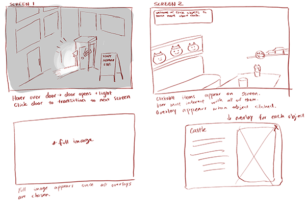

Every Picture Development
After discussing with peers in class, I decided I needed a conceptual change to my Every Picture project. I chose a new topic - my study abroad experience in Japan from a few years ago. I chose this topic because the images I took were very inspiring to me personally. A particular image I wanted to highlight is one I took in a hidden restaurant in a dark alleyway. While the outside was dark and unremarkable, the inside was full of color and fun decorations. The owner also had an eccentric personality much like the decorations on the wall. To highlight some of the most moving moments during this trip, I wanted to pick out items in the restaurant that best relate to some of my other photos to be the buttons that the user can click to learn more about my trip.
